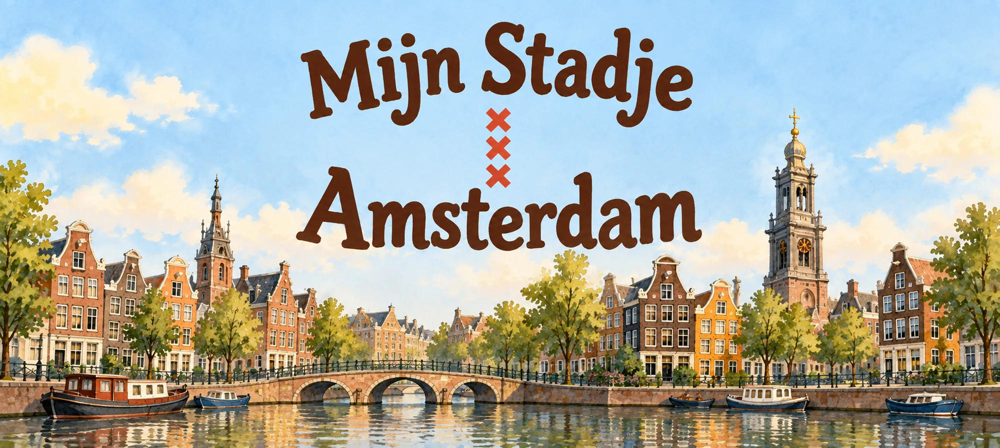
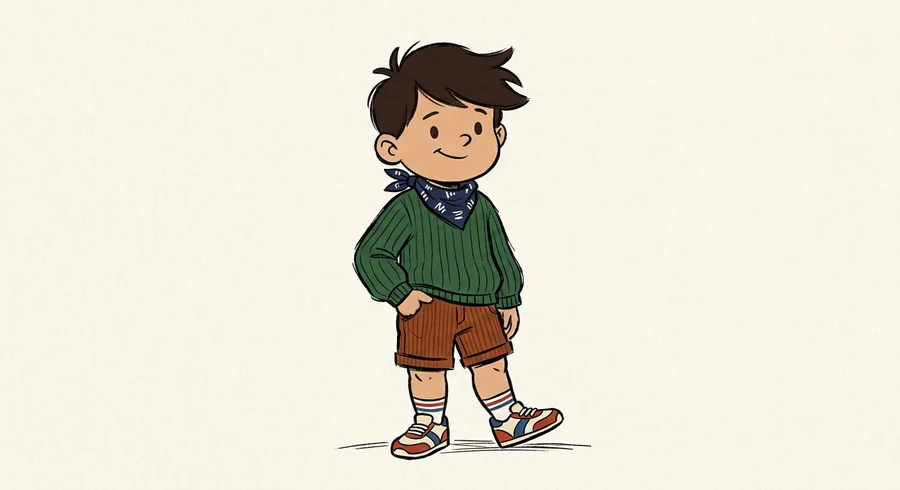
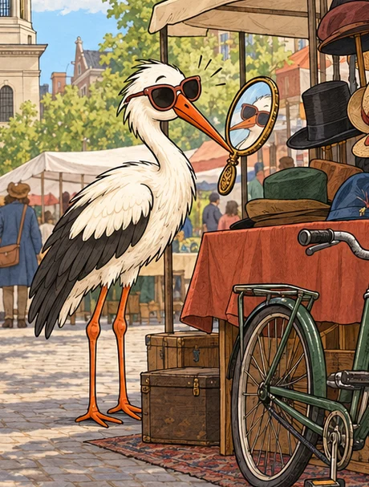
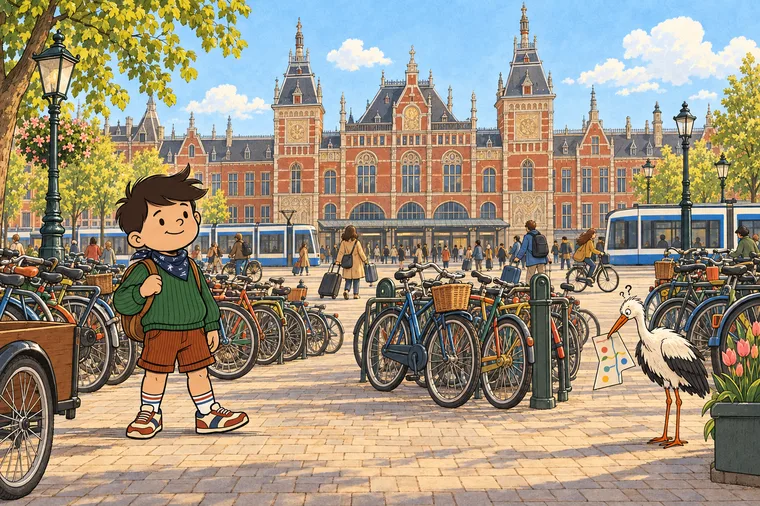
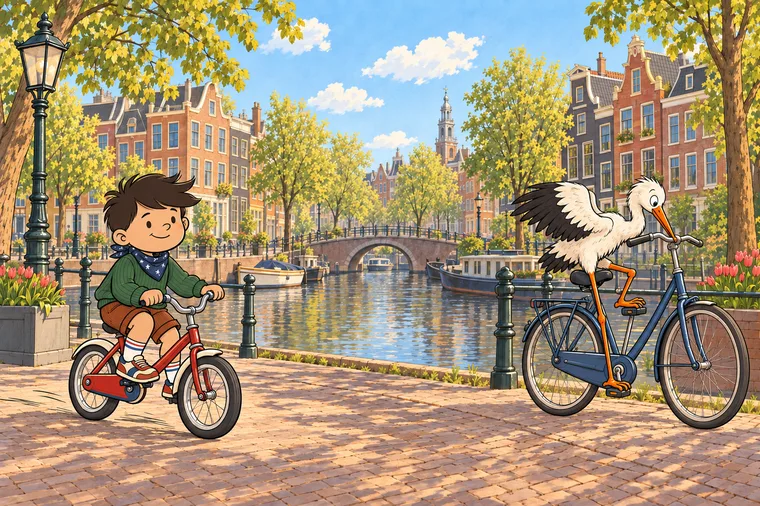
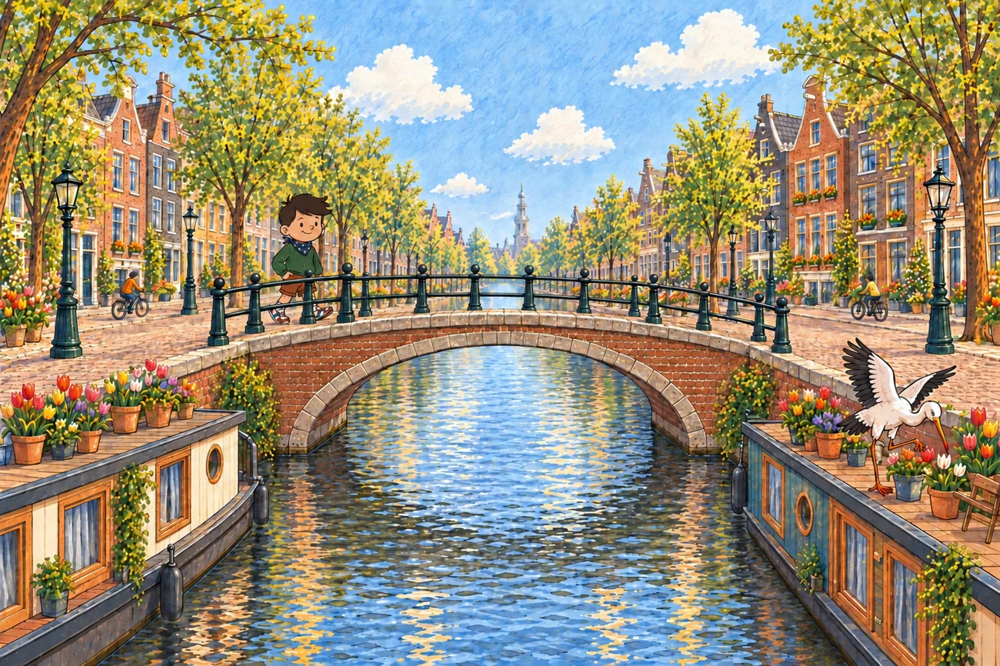
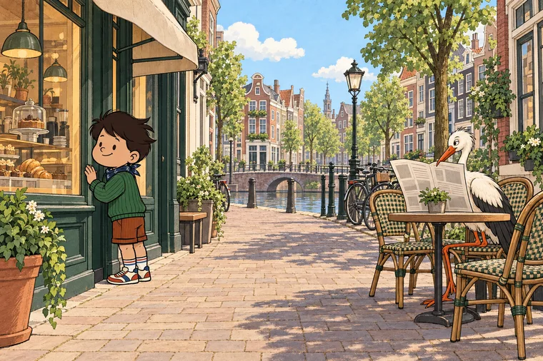
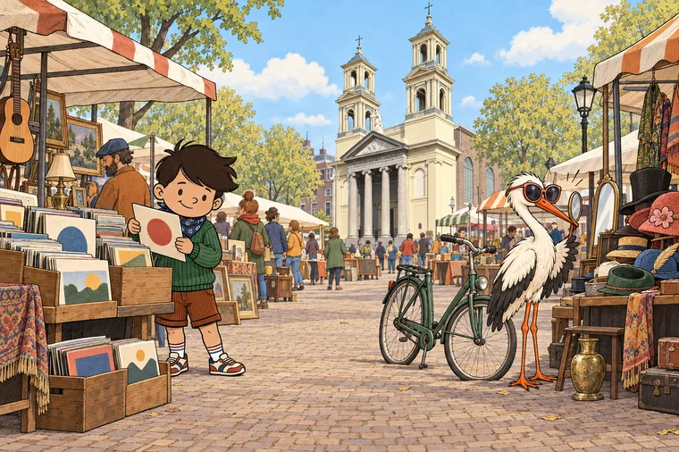
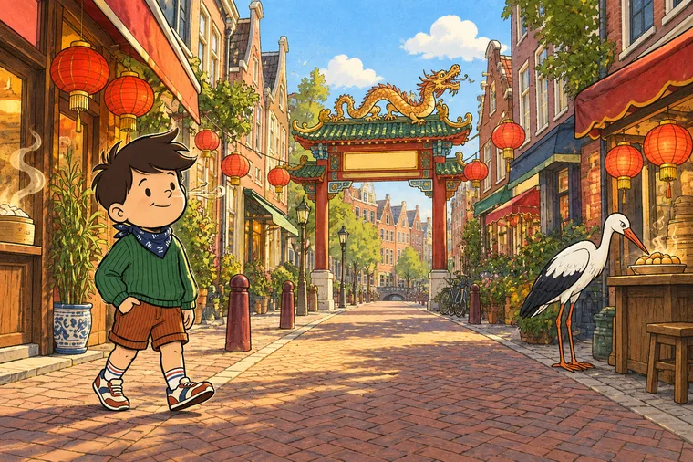
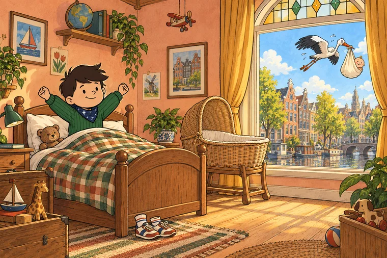

Mijn Stadje
Amsterdam
Definitieve boekomslag volgt zodra alle spreads klaar zijn
Noah ontdekt Amsterdam
Op de bakfiets langs de grachten, het pontje naar Noord, hardlopen in het Vondelpark en stroopwafels vers van de kraam op de Albert Cuypmarkt — Noah neemt je peuter mee langs alles wat Amsterdam voor jullie gezin bijzonder maakt.
- Vervoer & bakfiets
- Sport & hobby
- Werk & Zuidas
- Vondelpark
- Albert Cuypmarkt
- Grachtengordel
- Koningsdag
- Thuiskomen
Zodra het boek gedrukt is, staat hier een link naar de Amazon-productpagina. Als deelnemer aan het Amazon Associates-programma verdien ik dan aan aankopen die aan de voorwaarden voldoen.
Acht stadsmomenten, elk met zijn eigen sfeer
Van de bakfiets bij Centraal tot de vlooienmarkt en het buurttentje — een paar spreads uit het Amsterdam-boek.

Spot 'm? De ooievaar verstopt zich op bijna elke pagina — een klein zoekplaatje voor onderweg.






